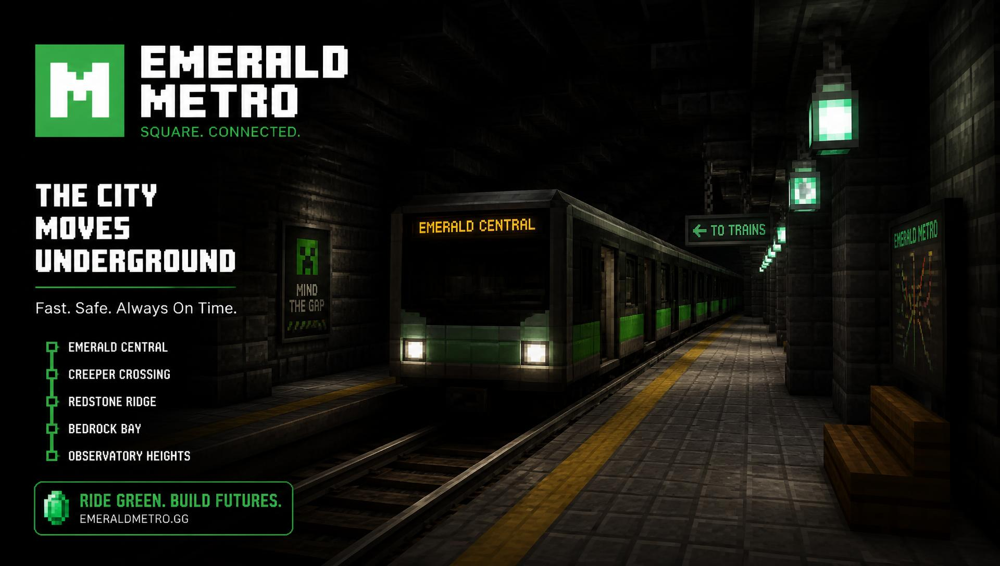

0
Рік заснування

Мережа з 5 ліній · 50 станцій
Підземна транспортна мережа, побудована блок за блоком у світі Minecraft. Швидко, безпечно й точно за розкладом — від Обсидіанової до станції «Край».
0
Рік заснування
0
Ліній у мережі
0
Станцій
0
Тунелів
0
Км колій
0
Блоків використано
0
Депо
0
Поїздів
Перша ділянка Червоної лінії відкрилася 1 березня 2019 року й налічувала лише чотири станції. Сьогодні мережа охоплює десять районів світу, чотири депо та 62 тунелі.
Кожна станція будувалася вручну: від несучих арок із кам'яної цегли до світлових панелей зі світлокаменю. Ми зберігаємо єдиний стиль навігації, але кожна станція має власне архітектурне обличчя.

Перші чотири станції від «Обсидіанової» до «Центрального Вокзалу» прийняли пасажирів 1 березня 2019 року.
Мережа вийшла до узбережжя: тунель під затокою став першим підводним перегоном у світі сервера.
Головна вертикальна лінія з'єднала північні плато з південною Оранжереєю.
Лінія, що обслуговує шахтарські райони та Незер-портал, стала найглибшою в мережі.
П'ята лінія перетнула всі попередні та додала три нові пересадкові вузли.
50 станцій, 62 тунелі, 4 депо, 38 потягів і 74,6 км колій.
Кожен перегін спочатку проєктується у вигляді схеми, потім прокладається технічний тунель, і лише після цього починається облицювання. Ми використовуємо лише блоки, доступні у виживанні, тому кожна станція — це реальні тисячі годин видобутку.

Усі перепустки працюють у всій мережі MineMetro. Активуйте квиток та вирушайте досліджувати світ Minecraft.

Аметистова лінія отримала четверту станцію з унікальним скалк-склепінням та звуковою навігацією.

Найшвидший склад мережі розганяється до 78 блоків за секунду та має скалк-систему гальмування.

П'ята лінія метрополітену з'єднала Стародавнє Місто з Краєм і додала три пересадкові вузли.